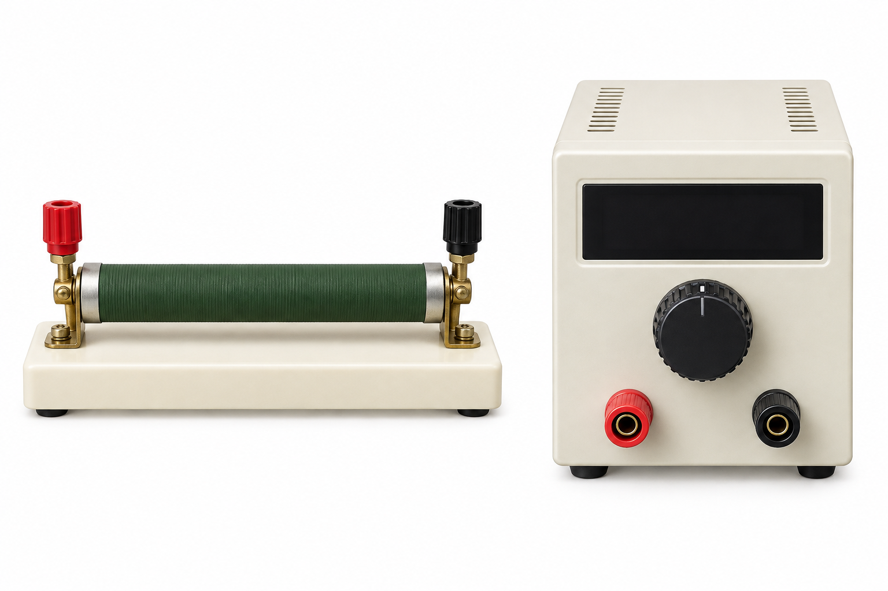

中2 理科・物理電流と
電流と
電圧の関係

中2 理科 電流と電圧の関係SeeD EDUCATION
同じ水路で、段差を大きくする
小さい段差では流れる量は少ない
大きい段差では流れる量が増える
中2 理科 電流と電圧の関係SeeD EDUCATION
電圧を変えると、電流は？
変えるのは抵抗器にかける電圧
測るのは流れる電流
中2 理科 電流と電圧の関係SeeD EDUCATION
電球の代わりに、抵抗器を使う
今回調べるもの抵抗器
同じものを使って電圧だけ変える
中2 理科 電流と電圧の関係SeeD EDUCATION
電圧計と電流計をつなぐ
電流計は抵抗器と直列
電圧計は抵抗器の両端へ並列
中2 理科 電流と電圧の関係SeeD EDUCATION
1.0 Vをかけて、測る
抵抗器Aにかける電圧1.0 V
電流計の読み0.10 A
中2 理科 電流と電圧の関係SeeD EDUCATION
2.0 Vをかけて、測る
抵抗器Aにかける電圧2.0 V
電流計の読み0.20 A
中2 理科 電流と電圧の関係SeeD EDUCATION
3.0 Vをかけて、測る
抵抗器Aにかける電圧3.0 V
電流計の読み0.30 A
中2 理科 電流と電圧の関係SeeD EDUCATION
測定値を並べよう
1.0 Vのとき0.10 A
2.0 Vのとき0.20 A
3.0 Vのとき0.30 A
中2 理科 電流と電圧の関係SeeD EDUCATION
測定値を、グラフの点にする
1.0 V・0.10 A一つ目の点
2.0 V・0.20 A二つ目の点
3.0 V・0.30 A三つ目の点
中2 理科 電流と電圧の関係SeeD EDUCATION
点を結ぶと、原点を通る直線
点を結ぶとまっすぐに並ぶ
電圧が0なら電流も0
中2 理科 電流と電圧の関係SeeD EDUCATION
電圧が2倍、3倍になると
電圧が2倍なら電流も2倍
電圧が3倍なら電流も3倍
この関係を比例という
中2 理科 電流と電圧の関係SeeD EDUCATION
4.0 Vなら、何A？
3.0 Vで0.30 Aなら4.0 Vでは？
比例するので0.40 A
中2 理科 電流と電圧の関係SeeD EDUCATION
抵抗器Bでも、電圧を変える
1.0 Vのとき0.05 A
2.0 Vのとき0.10 A
3.0 Vのとき0.15 A
中2 理科 電流と電圧の関係SeeD EDUCATION
同じ3.0 Vでも、電流が違う
抵抗器Aでは0.30 A
抵抗器Bでは0.15 A
中2 理科 電流と電圧の関係SeeD EDUCATION
電流の流れにくさを、抵抗という
同じ電圧をかけたときBは電流が少ない
Bの方が抵抗が大きい
中2 理科 電流と電圧の関係SeeD EDUCATION
覚えること
電気抵抗電流の流れにくさ
単位はΩ（オーム）
同じ電圧なら抵抗が大きいほど電流は小さい
中2 理科 電流と電圧の関係SeeD EDUCATION
導線の芯と、外側の被覆
銅の芯は電流を通しやすい
外側の被覆は電流を通しにくい
中2 理科 電流と電圧の関係SeeD EDUCATION
覚えること
金属など、抵抗が小さい物質導体
ガラス・ゴムなど、抵抗が非常に大きい物質不導体（絶縁体）
中2 理科 電流と電圧の関係SeeD EDUCATION
電圧を電流で割ってみる
1.0 V ÷ 0.10 A10
2.0 V ÷ 0.20 A10
3.0 V ÷ 0.30 A10
中2 理科 電流と電圧の関係SeeD EDUCATION
抵抗は、電圧÷電流
抵抗を求めるには電圧÷電流
記号で書くとR＝V÷I
中2 理科 電流と電圧の関係SeeD EDUCATION
覚えること
電流と電圧の関係抵抗が一定なら比例する
オームの法則V＝R×I
単位をそろえるV・A・Ω
中2 理科 電流と電圧の関係SeeD EDUCATION
電流は、電圧÷抵抗
電流を求めるには電圧÷抵抗
記号で書くとI＝V÷R
中2 理科 電流と電圧の関係SeeD EDUCATION
3.0 Vで0.20 A。抵抗は？
使う式R＝V÷I
値を入れる3.0÷0.20
答え15 Ω
中2 理科 電流と電圧の関係SeeD EDUCATION
20 Ωに6.0 V。電流は？
使う式I＝V÷R
値を入れる6.0÷20
答え0.30 A
中2 理科 電流と電圧の関係SeeD EDUCATION
10 Ωに0.40 A。電圧は？
使う式V＝R×I
値を入れる10×0.40
答え4.0 V
中2 理科 電流と電圧の関係SeeD EDUCATION
200 mAは、そのまま使える？
まずAに直す200 mA＝0.20 A
3.0 Vなので3.0÷0.20
抵抗は15 Ω
中2 理科 電流と電圧の関係SeeD EDUCATION
電流をmAで答えるには？
30 Ωに6.0 Vをかける6.0÷30＝0.20 A
答えの単位がmAなら0.20×1000
答え200 mA
中2 理科 電流と電圧の関係SeeD EDUCATION
同じ電圧で、二つの直線を比べる
3.0 VのときAは0.30 A、Bは0.15 A
電流が小さいBは抵抗が大きい
中2 理科 電流と電圧の関係SeeD EDUCATION
グラフから、抵抗を求めよう
Bの3.0 Vを読む0.15 A
電圧÷電流3.0÷0.15
抵抗器Bの抵抗20 Ω
中2 理科 電流と電圧の関係SeeD EDUCATION
Bに100 mA流すには、何V？
縦軸の100 mAから横へ、Bの直線まで
直線との交点から下へ、電圧の軸まで
読み取ると2.0 V
中2 理科 電流と電圧の関係SeeD EDUCATION
Aに250 mA流すには、何V？
縦軸の250 mAから横へ、Aの直線まで
交点から下へたどると2と3の間
読み取ると2.5 V
中2 理科 電流と電圧の関係SeeD EDUCATION
mAのグラフから、抵抗を求める
3.0 Vで150 mA150 mA＝0.15 A
Aに直してから計算3.0÷0.15
抵抗は20 Ω
中2 理科 電流と電圧の関係SeeD EDUCATION
覚えること
抵抗が一定なら電流は電圧に比例する
オームの法則V＝R×I
抵抗を比べるなら同じ電圧で、電流を見る
中2 理科 電流と電圧の関係SeeD EDUCATION